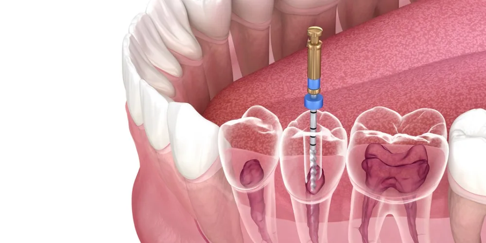

Zdravljenje koreninskih kanalov
Endodontsko zdravljenje zob ali zdravljenje koreninskih kanalov je postopek, ki postane nujen v primeru, ko pride do vnetja ali odmrtja zobne pulpe. To stanje pogosto vodi v bakterijsko okužbo prostora, kjer se nahaja zobna pulpa.
Naročite se na pregled →
O storitvi
Specialist, ki izvaja tovrstno zdravljenje, se imenuje endodont. Njegova naloga je odstraniti vneto ali odmrlo zobno pulpo ter bakterije iz pulpne komore in koreninskih kanalov, s tem pa se prepreči nadaljnje širjenje okužbe. Postopek vključuje tudi mehansko-kemično pripravo koreninskih kanalov za doseganje popolne dezinfekcije in hermetične zapore prostora, kjer je bila pulpa.
Po končanem zdravljenju je pomembno, da se endodontsko zdravljene zobe redno kontrolira z rentgenskimi posnetki in tako zagotovi dolgoročna uspešnost zdravljenja.
Kdaj je potrebno endondontsko zdravljenje?
Stanja, ki nakazujejo na potrebo po tovrstnem zdravljenju, so:
Globoki karies – ko karies prodre globoko v zob in doseže zobno pulpo, povzroči vnetje ali odmrtje pulpe, kar zahteva endodontsko zdravljenje.
Odlomljena zobna krona – poškodbe zobne krone, ki izpostavijo zobno pulpo, lahko vodijo do okužbe in vnetja pulpe.
Skleninske poke – poškodbe sklenine, ki omogočajo bakterijam dostop do pulpe, povzročajo njeno vnetje ali odmrtje.
Obsežno protetično brušenje zoba – intenzivno brušenje zoba za namene protetične obnove lahko poškoduje zobno pulpo in povzroči njeno vnetje ali odmrtje.
Globoki parodontalni žepi – napredovana parodontalna bolezen, ki vodi do globokih žepov okoli zob, lahko povzroči vnetje ali odmrtje pulpe zaradi bakterijske okužbe.
Simptomi, ki kažejo potrebo po endodontskem zdravljenju so bolečine (močne in dolgotrajne bolečine v zobu, še posebej ob ugrizu ali pritisku), oteklina (otekanje dlesni ali obraza v bližini prizadetega zoba), občutljivost (preobčutljivost na toplo, hladno ali sladko, ki ne izzveni po odstranitvi dražljaja), sprememba barve zoba (temnenje zoba, kar lahko nakazuje odmrtje pulpe), gnojne fistule (prisotnost gnojnih izcedkov ob koreninskem vrhu zoba) in nelagodje (stalno nelagodje in občutek pritiska v prizadetem zobu).
Postopek endodontskega zdravljenja
Pogosto pride zobni karies tako globoko, da zaradi njega odmre zobni živec.
Zob potemni in neha boleti, saj odmre, na vrhu korenine pa nam začne delati probleme. Tam namreč nastane granulom, ki pogosto sploh ne boli in pacienti mirno živijo dokler nekega dne ne pride do aktivacije (zaradi padca odpornosti).
Takrat zaradi hudih bolečin poiščejo zobozdravniško pomoč, do prihoda v ordinacijo pa ponavadi tudi že zatečejo. Takrat zobozdravniki nudimo prvo pomoč, da odvzamemo bolečino, zob pa v primeru, da je še rešljiv koreninsko zdravimo.
Zobno krono prevrtamo in poiščemo vse koreninske kanale (kočniki imajo tudi do 5 kanalov), jih s posebnimi inštrumenti razširimo in očistimo ter jih napolnemo z zdravilno pasto, v naslednjih sejah pa z tesno gumijasto polnilno pasto. Takšen zob čez pol leta ponovno slikamo z rentgenskim aparatom, da preverimo uspešnost zdravljenja (če je granulom izginil), šele nato pa po potrebi oskrbimo zob s prevleko.
V našem centru kanale širimo z različnimi sistemi za strojno širjenje kanalov, pomagamo si tudi z ultrazvokom, za temeljito spiranje in aktivacijo razkužila. V letu 2016 smo naše delo nadgradili še z uporabo zobozdravniškega mikroskopa. Z močno osvetlitvijo in do 36-kratno povečavo lahko naredimo prej nemogoče.
Zobe, ki so že bili neuspešno zdravljeni ali pa so v njihovih koreninah zalomljene iglice lahko pod mikroskopom ponovno zdravimo in odstranimo zalomljene inštrumente.
Kot zanimivost moramo omeniti tudi dezinfekcijo kanalov z laserjem in ultrazvokom, ki jo s pridom izvajamo na močno okuženih zobeh z gangreno. Študije kažejo izboljšanje dolgoročne uspešnosti iz 55% na 85%.
Pri zapletenih primerih, ko ne najdemo vseh kanalov si lahko sedaj pomagamo s CBCT 3D slikanjem zob, in na podlagi slike ugotovimo, kje leži skriti kanal, ali pa kateri kanal je vzrok bolečin.
Pri koreninskem zdravljenju imamo uspešnost povsem primerljivo z analizami narejenimi v raznih priznanih tujih klinikah! V primeru, da je zob temno zabarvan in da moti estetski videz, ga lahko tudi pobelimo. Več o beljenju temnih zob si lahko preberete tukaj.
Možni zapleti in tveganja endodontskega zdravljenja zoba
Endodontsko zdravljenje je večinoma učinkovito, vendar se lahko zgodi, da včasih zob po postopku ne zaceli pravilno ali se čez čas ponovno okuži. Med postopkom lahko pride tudi do poškodbe okoliškega tkiva, kar povzroči dodatne zaplete, kot so bolečina, oteklina in absces.
Večinoma pa so z ustrezno tehniko, skrbno izvedenim postopkom in rednim spremljanjem endodontska zdravljenja dolgoročno uspešna.
Za preprečevanje zapletov pri endodontskem zdravljenju je ključna uporaba natančnih in preverjenih tehnik za čiščenje ter zapiranje koreninskih kanalov. Temeljita dezinfekcija in popolna zapora kanalov namreč preprečujeta ponovne okužbe.
Pomembni pa so tudi redni kontrolni pregledi z rentgenskim slikanjem, ki omogočajo zgodnje odkrivanje težav in pravočasno ukrepanje. ✔️ / ✖️ Prednosti / Slabosti zdravljenja zoba ✔️ Endodontsko zdravljenje zoba omogoča, da se naravni zob ohrani. ✔️ Postopek odstrani vnetje in bolečino ter prepreči širjenje okužbe. ✔️ Zob ohrani funkcijo ugriza in žvečenja. ✔️ Veliko manj invazivno in cenejše kot nadomestitev zoba z implantatom ali mostičkom. ✔️ Omogoča ohranitev estetskega videza ✖️ Postopek je lahko dolgotrajen in zahteva več obiskov. ✖️ Zdravljen zob lahko postane nekoliko bolj krhek in potrebuje dodatno zaščito (npr. zobno lusko). ✖️ Ni vedno 100% uspešeno ✖️ Ob zelo hudih okužbah zdravljenje ni mogoče in je potrebna ekstrakcija zoba. ✖️ Po endodontskem zdravljenju lahko občasno zob postane občutljiv nekaj dni.
Alternativne možnosti
Ko endodontsko zdravljenje ni uspešno ali izvedljivo, obstajajo druge možnosti za reševanje vseh zgoraj omenjenih težav. Odločimo se lahko za ekstrakcijo zoba in nadomestitev z implantati ali mostički.
Ekstrakcija zoba je postopek odstranitve močno poškodovanega ali okuženega zoba, ki ga ni mogoče uspešno obravnavati z endodontskim zdravljenjem. Čeprav ekstrakcija rešuje težave okužbe ali bolečine, pa ustvari potrebo po nadomestitvi manjkajočega zoba. Ena izmed najučinkovitejših rešitev po ekstrakciji je vstavitev zobnih implantatov.
Druga možnost za nadomestitev manjkajočih zob so zobni mostički, ki so sestavljeni iz zobnih kron, te pa so pritrjene na sosednje zdrave zobe in umetni zob podpirajo na mestu, kjer je bil izvlečen zob. Ta rešitev je sicer ugodnejša od implantatov in ne zahteva kirurškega posega, vendar pa lahko vpliva na zdravje sosednjih zob, saj morajo ti biti za namestitev mostička brušeni.
Še ena alternativa endodontskemu zdravljenju je apikotomija, kirurški poseg, ki se izvaja na predelu zobne korenine in je pogosto zadnja možnost, ko klasično zdravljenje zobnega korena ne prinese želenih rezultatov. Ta postopek je namenjen odstranjevanju vnetja na vrhu korena zoba, ki se včasih ne odziva na endodontski poseg.
Imamo izkušnje, lahko vam pomagamo.
Za informativno ponudbo se naročite na neobvezujoč pregled.
Naročite se na pregled →Podobne storitve
Vse storitve →
Konzervativno in estetsko zobozdravstvo
Širok razpon preventivnega in estetskega zobozdravstva s poudarkom na estetiki.

Implantati
Manjkajoče zobe nadomestimo z zobnimi vsadki, implantati.

All-on-4
Če ste ali boste v kratkem izgubili vse zobe, vam jih metoda All-on-4 povrne v enem dnevu.

Beljenje zob
Sedaj si lahko posvetlite zobe že s samo enim obiskom v naši ordinaciji.